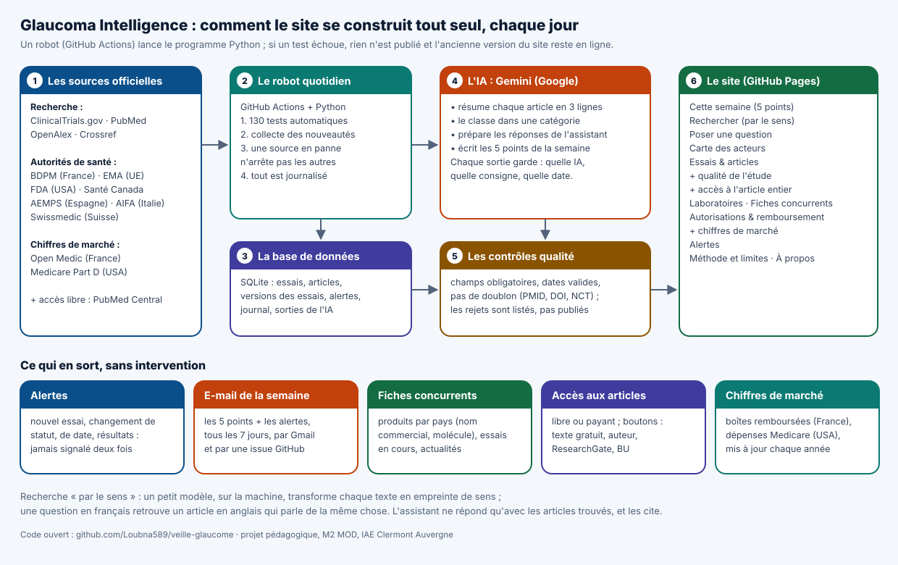

Comment ça marche
En une phrase : chaque matin, un robot lit à ma place les sites officiels, garde les nouveautés, les fait résumer par une IA, vérifie le tout, puis met ce site à jour. Le schéma se lit de gauche à droite, case par case.

Le schéma expliqué simplement, case par case
1. Les sources
Les sites officiels où l'information naît : PubMed (articles médicaux), ClinicalTrials.gov (registre des essais), les autorités de santé (ANSM, EMA, FDA…). Que des sources publiques.
🎤 « Au lieu d'aller sur 11 sites chaque matin, je laisse le robot le faire. »
2. Le robot
Un programme (écrit en Python) qui tourne tout seul chaque matin sur les ordinateurs de GitHub, même quand mon PC est éteint. Avant de travailler, il passe 149 tests : si un test échoue, il s'arrête.
🎤 « C'est un réveil automatique : chaque matin, il fait la tournée des sources. »
3. La base de données
Un grand classeur où tout est rangé : chaque essai, chaque article, et l'historique des essais. C'est grâce à lui qu'on sait ce qui a changé depuis hier (alertes).
🎤 « Le robot compare avec la veille : c'est comme ça qu'il repère les nouveautés. »
4. L'IA Gemini
L'IA de Google lit les résumés en anglais et écrit 3 lignes en français, range l'article dans une catégorie et rédige les 5 points de la semaine. Elle ne travaille qu'à partir des textes qu'on lui donne.
🎤 « L'IA fait le travail de lecture ; moi je garde le jugement, et chaque phrase renvoie à sa source. »
5. Les contrôles
Avant publication, chaque fiche est vérifiée : titre présent, date valable, pas de doublon. Une citation inventée par l'IA est refusée. Ce qui ne passe pas est mis de côté, pas publié.
🎤 « Rien n'est publié sans passer les contrôles : l'ancienne version reste en ligne en cas de problème. »
6. Le site
Le résultat : ce site, mis à jour automatiquement, plus un e-mail chaque semaine. Gratuit, hébergé par GitHub Pages.
🎤 « Le matin, je n'ai qu'à ouvrir le site ou lire mon e-mail. »
Les mots techniques du schéma
- GitHub
- Site où l'on range du code. Il offre aussi des ordinateurs (GitHub Actions) qui lancent le robot, et l'hébergement du site (GitHub Pages).
- Python
- Le langage de programmation dans lequel le robot est écrit.
- SQLite
- Un type de base de données : un seul fichier, comme un classeur Excel très organisé.
- Test automatique
- Une petite vérification que le programme fait sur lui-même (par exemple : « une date invalide est-elle bien refusée ? »).
- Recherche « par le sens »
- Chaque texte est transformé en une empreinte de sens : une question en français retrouve un article en anglais qui parle de la même chose, même sans mot commun.
📡 D'où viennent les données
La recherche
- ClinicalTrials.gov : les essais cliniques
- PubMed : les articles médicaux
- OpenAlex : les articles absents de PubMed
- Crossref : qui a financé l'article
La France (page Comparer)
- Base officielle des médicaments (ANSM) : marques vendues, laboratoire, prix, remboursement
- HAS : avis SMR et ASMR
Les sigles sont expliqués dans le glossaire en bas de page.
⏱️ Quand c'est mis à jour
Essais, articles, rétractations, résumés par l'IA, alertes.
Les 5 points à retenir, sur le site et par e-mail.
🤖 L'IA, simplement
L'IA qui écrit est Gemini, de Google (offre gratuite).
Elle résume
Pour chaque article : 3 lignes en français et une catégorie (médicament, chirurgie, dispositif, diagnostic…).
Elle retrouve par le sens
Un petit modèle installé sur la machine (pas Gemini) relie les textes qui parlent de la même chose : une question en français retrouve un article en anglais, même avec d'autres mots.
Elle répond en citant
L'assistant ne répond qu'avec les articles trouvés et les cite. Sinon, il dit « je ne sais pas ».
Elle résume la semaine
Des points sont donnés aux nouveautés : résultats publiés +6, essai terminé +4, phase 3 +3, essai randomisé +3, laboratoire promoteur +2… L'IA rédige 5 points à partir des mieux notées.
Pour le jury : les chiffres du moteur
1. Les données : la base SQLite
Nombre de lignes de chaque table. Une publication vue par plusieurs sources n'est enregistrée qu'une fois (clés PMID, DOI, NCT).
2. Les contrôles qualité avant publication
3. Les performances mesurées
Calculées sur des jeux jugés à la main : 30 publications pour la classification, 10 questions × 5 résultats pour la recherche. Tant que les jugements ne sont pas faits, aucun chiffre n'est affiché.
4. Le journal des exécutions
Une ligne par source et par passage. Si une source est en panne, l'exécution est « partielle » et les autres continuent.